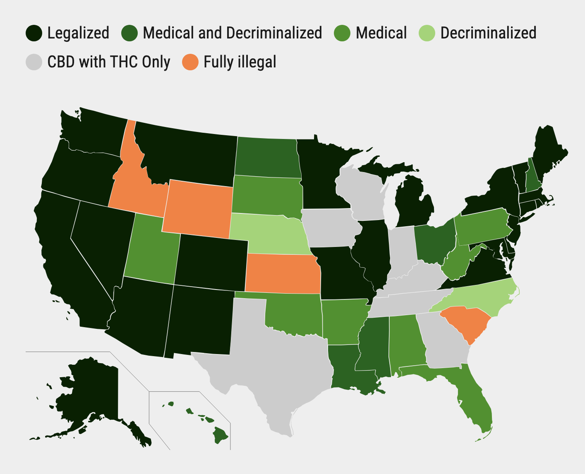

Cannabis: Harmless or Hazardous?
Survey of Existing Research
As the stigma surrounding the usage of recreational drugs has lessened in recent years, many have called for the legalization of some illicit substances. In particular, law makers and lobbyists have considered the legalization of cannabis, also known as marijuana, due to its prevalence, medicinal properties, and low addictiveness. In fact, while cannabis is still illegal at the federal level, 23 states and D.C. have fully legalized marijuana for medical and recreational purposes, and 38 states have legalized marijuana usage for medical purposes(DISA n.d.).
(DISA n.d.)
However, there is also a growing body of research that indicates that cannabis usage can be linked to episodes of psychosis and trigger the development of schizophrenia. Research has show that there is “an association between cannabis use and psychosis”, but the question about causation remains open (Ganesh and D’Souza 2022). Increasingly, people are starting to use cannabis at a younger age and with more frequency, resulting in more questions about the health impact of such usage (Ganesh and D’Souza 2022). Furthermore, there has been a rising level of THC, the active ingredient in cannabis, in recent years. The average potency of THC in cannabis has increased from 3% in the 1960’s to 16% in England(Murray et al. 2016). Research has “robustly deomnstrated that THC can transiently induce clinically relevant acute schizophrenia-like symptoms”, meaning that THC has been show to cause episodes of psychosis (Ganesh and D’Souza 2022). On the other hand, genetic research has indicated that schizophrenia may be the causation of cannabis usage, leading to continue debate on the causality of this relationship (Ganesh and D’Souza 2022). A meta analysis of relevant research supports the possibility of “cannabis causing psychosis”, but the approach has limitations (deepak 9). It is also notable that cannabis use alone is “neither necessary nor sufficient for psychosis”, meaning other factors such as genetics are relevant for the development of psychosis (Ganesh and D’Souza 2022). Ganesh and D’Souza note that the increasing legalization and usage of cannabis must be studied closely, as it will elucidate whether there is a causational relationship between marijuana and psychosis.
Related to the usage of cannabis is the growing use of cannabinoids, substances that are closely related to cannabis. Examples of cannnabinoids include synthetic THC and CBD which have become prevalent through a “regulatory loophold” in 2018 (Dotson et al. 2022). Often, these substances are sold in very high concentrations that can lead to unknown risks. Research has shown tha “cannabis use was associated with an odds ratio of 1.4 for the development of schizophrenia”, and there is evidence for a risk of addiction to THC similar to other illicit substances. Even more concerning, research in Europe also indicates that rising THC levels and rising “first episode pyschosis admissions” to hospitals have coincided (Dotson et al. 2022).
In the U.S., approaches such as “vaping” and “dabbing” allow users to ingest THC in concentrations of up to 80% (Murray et al. 2016). These synthetic cannabinoids are much more dangerous that cannabis, increasing the risk of hospitalization by 30% (Murray et al. 2016). The first scientific study on the connection between cannabis and psychosis was led by Andreasson in 1987, and longitudinal studies have indicated an association between cannabis and psychosis, though not all results have been statistically significant (Murray et al. 2016). There is evidence that genetic predisposition plays a role in the development of psychosis and can be trigger by cannabis usage, but it is unclear if cannabis and psychosis are associated without genetic predisposition (Murray et al. 2016).
Data Science Research Project
The increasing legalization of cannabis despite research indicating an association between cannabis and psychosis has motivated me to perform data-driven research on the correlation between cannabis usage and the development of psychosis. Some motivating questions include:
- Is cannabis usage a predictor of the development of a psychotic episode?
- Is cannabis usage a predictor of the development of a psychotic disorder, such as schizophrenia?
- How does THC content contribute to the potential development of psychosis?
- Has the legalization of cannabis contributed to an increase in the prevelance of psychotic disorders?
- What role do genetics play in the development of a psychotic disorder? How does cannabis usage impact genetics?
- How does age impact the development of psychosis due to cannabis usage?
- How does frequency of cannabis usage impact the potential development of psychosis? The number of psychotic episodes?
- What is the public sentiment regarding cannabis?
- Does public sentiment indicate an awareness of the dangers of cannabis, especially as related to psychosis?
- What is the public sentiment regarding cannabinoids such as CBD and THC products?
Overall, the goal of this research is two-fold: (1) to perform a thorough, analytic analysis to assess the causational role of cannabis in the development of psychosis; and (2) gain insights into why legalization efforts have continued despite the severity of known risks associated with cannabis usage. My hypotheses are that cannabis does play a causal role in psychosis and development of schizophrenia and that public knowledge on the risks of cannabis usage have been poorly communicated and understated.